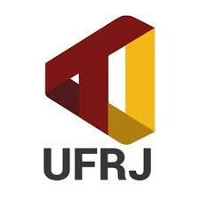

Lucas Orquisa Pereira
Professor, comunicador e historiador
Portifolio
Instagram Educativo
Ebook
Github

Telejornal UFRJ
Experiências:
Professor e Coordenador no
Pré-Vestibular Rubem Alves
de 2017 a 2019
Roteirista no
Laboratorio de Inovação Cidadã
em 2017
Vencedor do
Hackathon UFRJ
em 2017
Especialista em Costumer Sucess na Estante Mágica em 2018
Diretor Criativo na Idapt em 2019
Estudos
Licenciatura em História - UFRJ
UX Design - Alura
Social midia - Alura
Programador Front-end - Alura
Contato
linkedin
e-mail